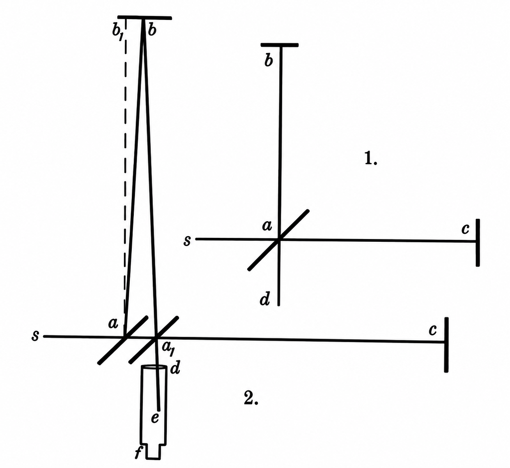
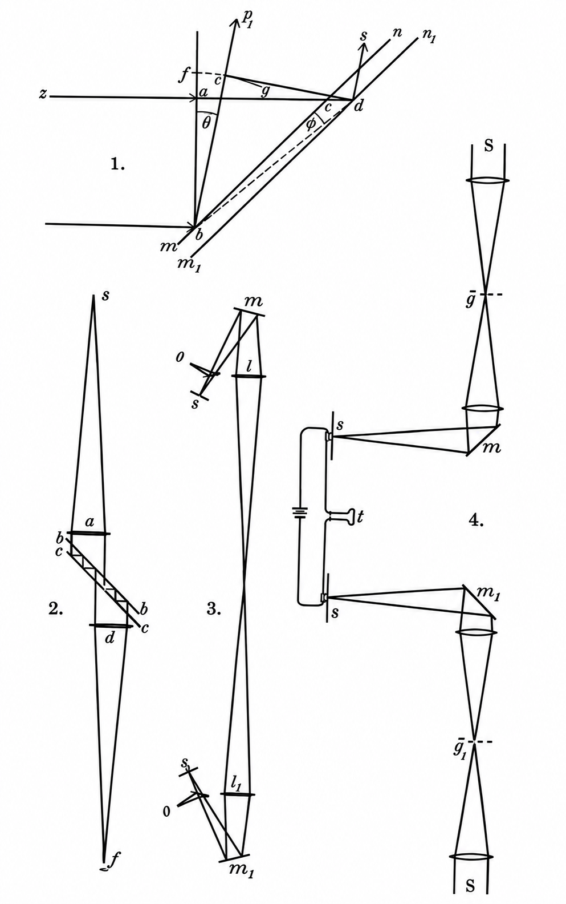
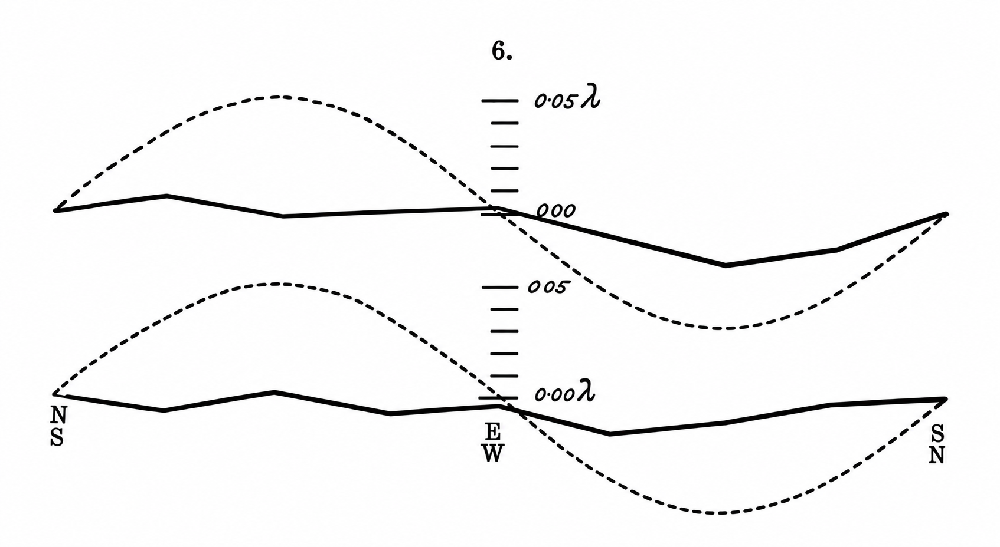
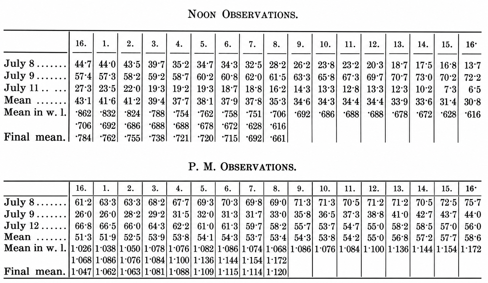
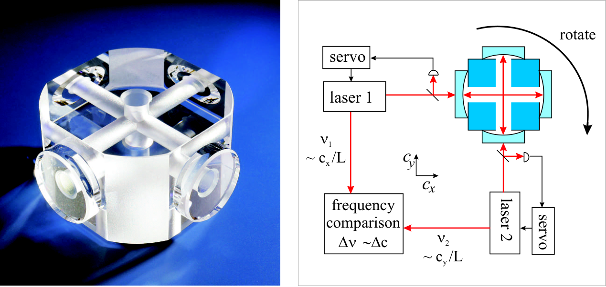
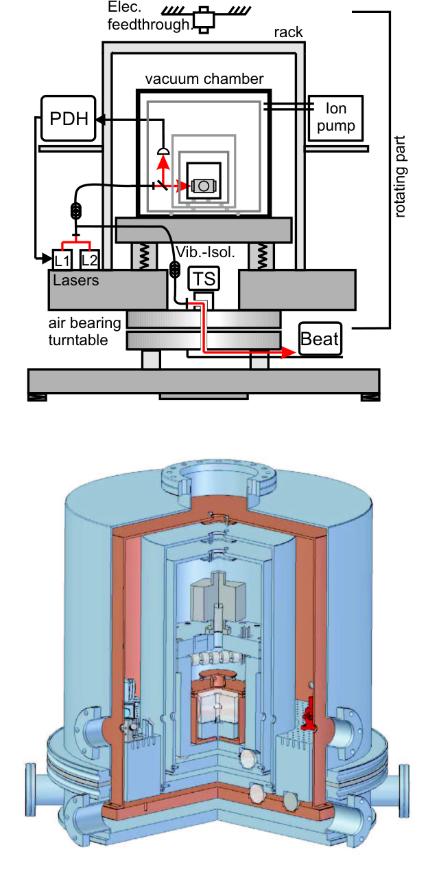

En el siglo XIX, la interferencia y la difracción mostraban que la luz se comportaba como una onda. Como las ondas mecánicas conocidas, por ejemplo el sonido, necesitaban un medio material, muchos físicos pensaban que la luz también debía propagarse a través de uno.
→
De ahí surgió una hipótesis…
Se imaginó un medio invisible llamado éter luminífero, que ocuparía todo el espacio y permitiría el paso de la luz. Aunque Maxwell explicó después que la luz era una onda electromagnética, muchos científicos seguían considerando necesario ese medio (Díaz López, 2011).
→
Sin embargo, había una dificultad…
Se suponía que el éter permanecía en reposo, pero la Tierra se movía alrededor del Sol. Si ambas ideas eran correctas, nuestro planeta debía desplazarse respecto de ese medio. Faltaba comprobar si ese movimiento relativo producía algún efecto observable. Esa dificultad impulsó las investigaciones que condujeron al experimento de Michelson y Morley (1887).
Científicos involucrados
Marco previo
Marco ondulatorio
Augustin-Jean Fresnel
1788–1827
Consolidó la teoría ondulatoria al explicar la interferencia y la difracción de la luz.
Propuso el arrastre parcial del éter para describir la luz en medios transparentes en movimiento (Michelson & Morley, 1887).
Colaboró con Michelson en la construcción y el perfeccionamiento del interferómetro de 1887.
Participó en las observaciones y el registro de franjas con un sistema de reflexiones múltiples y una base giratoria estable (Michelson & Morley, 1887).
Una superficie semirreflectante divide la luz de una misma fuente en dos haces. Los espejos los reflejan y permiten que regresen para reunirse. En cada espejo, el ángulo de incidencia es igual al de reflexión.
El dibujo representa los recorridos de manera simplificada; el montaje histórico incorporó reflexiones adicionales.
Al encontrarse los haces, sus campos eléctricos se suman. La diferencia de fase (Δφ) determina la intensidad observada. Si ambos haces tienen la misma intensidad individual:
I: intensidad resultante; I0: intensidad de cada haz; Δφ: diferencia de fase (rad). Se suponen haces coherentes y con la misma polarización.
La luz acumula fase mientras recorre un trayecto. Si cambia la diferencia de camino óptico entre los haces, también cambia la fase y se desplazan las franjas.
Δℓopt: diferencia de camino óptico; δN: cambio en número de franjas; δ: variación respecto de una posición inicial. Un cambio de una longitud de onda equivale a una franja.
Para observar franjas estables, los dos haces deben mantener una relación de fase definida. Por eso es importante que sus recorridos sean casi iguales, especialmente al trabajar con luz blanca.
En 1887 se utilizó luz de sodio para facilitar el ajuste inicial y después luz blanca para las observaciones.
Superposición de dos ondas al variar su diferencia de fase
Los dos haces tienen igual intensidad y polarización. Al mover el control, observa cómo cambia la suma de sus campos y la intensidad resultante.
Nota. Modelo didáctico interactivo; no reproduce observaciones de 1887. En estas tarjetas se utiliza V para la rapidez luminosa (c en la notación habitual).
Montaje experimental
Elementos del interferómetro de 1887
El divisor separa un haz de luz en dos recorridos perpendiculares. Los espejos los devuelven al observador, donde vuelven a reunirse y pueden producir franjas de interferencia. Selecciona los componentes del dibujo para explorar su función.
Figura 7
Croquis de dos brazos ópticos: seleccionar un componente
Nota. Esquema didáctico simplificado. En el aparato de 1887, las reflexiones múltiples ampliaban el recorrido de la luz (Michelson & Morley, 1887).
Cómo se desarrolló la experiencia
◌
Preparación
Se alineaban los espejos con luz de sodio y se ajustaban los caminos hasta encontrar las franjas de luz blanca.
↻
Rotación
Se giraba lentamente la plataforma y se observaba una franja en 16 orientaciones sucesivas.
⌖
Registro
Se anotaba su posición con un micrómetro y se promediaban seis vueltas por serie, cerca del mediodía y de las seis de la tarde (Michelson & Morley, 1887).
Variable que se modificabaOrientación angular de la losa (θ)Lectura del instrumentoPosición de una franja en divisiones del micrómetroⓘ Conversión de la lectura
La separación entre franjas ocupaba de 40 a 60 divisiones, con un promedio cercano a 50.
Equivale a un cambio de camino óptico de 0,02 λ. El artículo lo expresa en longitudes de onda; no es la longitud física de una división del tornillo.
La hipótesis del éter permitía calcular cuánto debían desplazarse las franjas al girar el interferómetro.
En la hipótesis histórica, la luz viaja con rapidez V respecto del éter y el aparato se desplaza con rapidez v. Cada brazo tiene longitud efectiva D.
Selecciona un paso para explorar su geometría y su cálculo.
Desarrollo didáctico a partir de Michelson y Morley (1887), pp. 334–335. Los signos ≈ indican aproximaciones de segundo orden en v/V. Consultar el original.
Figura 11
Recorridos de la luz representados por Michelson y Morley en 1887

Nota. Reproducción de las figuras 1 y 2 de Michelson y Morley (1887), On the relative motion of the Earth and the luminiferous ether, American Journal of Science, 34(203), 333–345. Artículo original.
La prueba no consistía en detectar simplemente franjas, sino en comprobar si su posición cambiaba de manera repetible al rotar el aparato. Esa es la diferencia entre observar interferencia y comprobar la hipótesis del éter.
Documento histórico complementarioOtros métodos propuestos en el suplemento de 1887 · Figura 12⌄
En el suplemento, Michelson y Morley examinaron otras posibilidades para estudiar el movimiento relativo, como la reflexión en superficies móviles. Estos esquemas no representan partes del interferómetro utilizado en las observaciones de 1887.(Michelson & Morley, 1887).
Figura 12
Esquemas de métodos alternativos descritos en el suplemento original

Nota. Reproducción de cuatro esquemas del suplemento al artículo de Michelson y Morley (1887). Son métodos propuestos, no fotografías del montaje de 1887. Artículo original.
Cambia el ángulo y observa, a la vez, cómo giran los brazos, qué ocurre con las franjas y cuál es el desplazamiento calculado.
01 Orientación del interferómetro
Los brazos giran respecto a la dirección hipotética del éter.
02 Franjas observadas en pantalla
En el modelo clásico cambia la fase; en el nulo idealizado no hay desplazamiento angular sistemático.
03 Ajusta y compara
Cambio de franjas respecto de 0°
+0.000 franjas
Predicción clásica al girar 90°0.373 franjas
Elige un ángulo para comparar la predicción clásica con el resultado nulo idealizado.
¿Qué significa un corrimiento de 0,4 franjas?
Una franja es un ciclo del patrón: de un máximo brillante al siguiente. Un corrimiento de 0,4 representa el 40 % de ese ciclo: si una franja pasa de una marca a la posición que ocupaba la siguiente franja del mismo tipo, avanzó una franja completa. Un corrimiento de 0,4 es cuatro décimas de ese avance.
Nθ: cambio de franjas respecto de 0°; L_A y L_B: recorridos totales de los mismos brazos (m); θ: orientación; λ = 590 nm. A 90°, el cambio de recorrido es −2Dx, con x = v²/V²; su magnitud en franjas es 2Dx/λ.
Nota. Simulación didáctica basada en las predicciones del artículo de Michelson y Morley (1887). En el modelo del éter, los anillos cambian de posición al girar el aparato; en el modo nulo idealizado permanecen estables: no se reproducen las pequeñas variaciones de las observaciones históricas ni se presentan datos experimentales como si fueran simulados.
Resultados del experimento
Comparación entre el corrimiento previsto por el éter estacionario y las observaciones realizadas en 1887.
Según la hipótesis del éter
¿Qué se esperaba?
≈ 0,4 franjas
Al girar el aparato 90°, los tiempos de recorrido de ambos haces debían intercambiarse y producir un desplazamiento periódico de aproximadamente 0,4 veces la separación entre franjas (Michelson & Morley, 1887).
Mediciones de 1887
¿Qué se observó?
< 0,02 franjas
Se registraron posiciones de franjas, pero el efecto angular buscado fue inferior a una vigésima parte del previsto. Los autores consideraron probable un valor inferior a 0,01 franjas(Michelson & Morley, 1887).
La Figura 13 reproduce las curvas originales de las observaciones realizadas al mediodía y al atardecer, comparadas por los autores con una señal teórica reducida para poder representarla.
Figura 13
Resultados publicados por Michelson y Morley en 1887 (figura original 6)

Falta el archivo H4.png en la carpeta de imágenes. Consulta la reproducción en el artículo original.
Nota. Reproducción de la figura 6 de Michelson y Morley (1887), American Journal of Science. Las curvas continuas muestran observaciones; las discontinuas, una octava parte de la predicción. Artículo original.
Consultar las mediciones originalesObservaciones de julio de 1887 · Tabla 1⌄
La tabla conserva las lecturas del micrómetro en distintas orientaciones, las medias de seis vueltas y su conversión a longitudes de onda. Las observaciones del mediodía y de la tarde se presentan por separado (Michelson & Morley, 1887).
Tabla 1
Observaciones originales realizadas al mediodía y durante la tarde

Nota. Reproducción de las tablas de observaciones del mediodía y la tarde del artículo de Michelson y Morley (1887), American Journal of Science. Artículo original.
Interpretación física. El giro del interferómetro no produjo la variación de franjas que predecía el modelo de éter estacionario. Este resultado puso en cuestión esa hipótesis concreta y motivó nuevas explicaciones sobre la propagación de la luz (Michelson & Morley, 1887); (Díaz López, 2011).
Impacto en la Física Moderna
Cuestionó la hipótesis del éter estacionario. El desplazamiento de las franjas previsto para el movimiento de la Tierra respecto del éter no apareció con la magnitud esperada. Esto puso en duda aquella explicación de la propagación luminosa (Michelson & Morley, 1887).
Impulsó nuevas explicaciones físicas. FitzGerald y Lorentz propusieron que los cuerpos se contraerían en la dirección de su movimiento respecto del éter para explicar por qué no se observaba el efecto previsto (Shankland, 1964).
Fue compatible con la relatividad especial. En 1905, Einstein formuló una teoría basada en dos principios: las leyes de la física son iguales en todos los sistemas inerciales y la rapidez de la luz en el vacío es la misma para todos esos observadores. Esa teoría no necesita un éter ni un sistema de reposo absoluto. El experimento fue coherente con ella, pero no constituyó su demostración única ni su causa directa(Einstein, 1905)(van Dongen, 2009).
Contribuyó al cambio de perspectiva sobre el espacio y el tiempo. En la nueva descripción relativista, la simultaneidad depende del observador y aparecen consecuencias como la dilatación del tiempo y la contracción de las longitudes. Estas consecuencias proceden de la teoría de Einstein, no de una medición directa del experimento de 1887 (Einstein, 1905).
¿Cómo podría realizarse actualmente?
Herrmann y colaboradores (2009) compararon las frecuencias de resonancia de dos cavidades ópticas perpendiculares, montadas en un bloque de sílice fundida que giraba continuamente. Esta es una prueba moderna equivalente a la de Michelson y Morley: no busca detectar el éter ni reproduce su montaje original, sino comprobar si la rapidez de la luz depende de la dirección de propagación. No encontraron una anisotropía significativa y establecieron un límite del orden de Δc/c ≈ 10−17(Herrmann et al., 2009). Consultar el artículo completo, gratuito (PDF).
Instrumentos empleados
λ
Dos láseres Nd:YAG estabilizados
Emiten a 1064 nm; su frecuencia se ajusta a la resonancia de cada cavidad mediante control Pound–Drever–Hall.
⊥
Cavidades ópticas perpendiculares
Dos resonadores Fabry–Pérot de alta fineza en un bloque de sílice fundida; sus espejos reflejan repetidamente la luz.
↻
Plataforma de rotación de precisión
Una mesa con cojinete de aire gira el sistema aproximadamente una vez cada 45 s y permite registrar su orientación.
ν
Fotodiodo y medición electrónica
La superposición de señales láser produce una frecuencia de batido que se mide con electrónica de alta precisión.
◌
Cámara de vacío y aislamiento
El vacío, el control térmico y el aislamiento activo reducen fluctuaciones del aire y vibraciones.
⌁
Registro y análisis digital
Se guardan la frecuencia de batido, el tiempo y el ángulo para buscar una variación periódica reproducible.
Las Figuras 15 y 16 documentan los componentes reales y su disposición en la investigación de 2009.
Figura 15
Resonadores ópticos reales y principio de medida

La imagen científica está disponible en el archivo gráfico del artículo. Para verla sin conexión, descarga la imagen original en PNG y guárdala como M1.png en Ilustraciones/General.
Nota. Reproducción de la figura 1 de Herrmann et al. (2009), publicada en Physical Review D. La fotografía de los resonadores fue tomada por E. Fesseler. La mitad izquierda es una fotografía del dispositivo; la derecha es el esquema presentado por los autores.
Figura 16
Sistema giratorio y cámara de vacío del experimento

La imagen científica está disponible en el archivo gráfico del artículo. Para verla sin conexión, descarga la imagen original en PNG y guárdala como M2.png en Ilustraciones/General.
Nota. Reproducción de la figura 3 de Herrmann et al. (2009): esquema completo del sistema y vista seccionada de su cámara de vacío. La vista seccionada es un dibujo técnico del equipo, no una fotografía.
Construcción y funcionamiento
Una cavidad confina la luz entre dos espejos y admite determinadas frecuencias de resonancia. Cada láser se ajusta a una de ellas; los dos resonadores se montan perpendicularmente dentro de la cámara de vacío. La plataforma hace girar el conjunto, y un fotodiodo compara las frecuencias láser. El batido es la oscilación producida al superponer ambos láseres; su frecuencia es |ν₁ − ν₂|. La electrónica registra sus variaciones junto con el ángulo de giro. Una anisotropía de la rapidez de la luz produciría una modulación de frecuencia ligada a la orientación (Herrmann et al., 2009).
La frecuencia de resonancia depende de la rapidez de la luz (c), de la longitud de la cavidad (L) y del número entero de modo (m). Δν representa la diferencia con signo; el detector registra la frecuencia de batido |Δν|. Aquí se conserva c, la notación del artículo moderno. Se compara la propagación de ida y vuelta (Herrmann et al., 2009).
Medición y diferencias respecto de 1887
La variable independiente es el ángulo de giro y la variable medida es la frecuencia de batido. Se controlan la temperatura, las vibraciones y la estabilidad del sistema. En 1887 se buscaba un desplazamiento de franjas mediante observación óptica; en 2009 se examinaba una modulación de frecuencia con adquisición digital, láseres y resonadores estables (Michelson & Morley, 1887)(Herrmann et al., 2009).
Aplicaciones actuales
La interferometría permite medir variaciones ópticas extremadamente pequeñas en experimentos y tecnologías actuales.
Detección de ondas gravitacionales: LIGO
El observatorio LIGO emplea láseres y dos brazos perpendiculares de 4 km para detectar variaciones diminutas en sus trayectos ópticos producidas por ondas gravitacionales. Aunque su finalidad difiere de la de Michelson y Morley, ambos utilizan la interferencia entre haces que recorren direcciones perpendiculares. La Figura 17 muestra la instalación de Hanford (LIGO Laboratory, s. f.).
Nota. Fotografía aérea de LIGO Hanford, 2023. Fuente: LIGO Laboratory, documento G2301207. Cortesía de Caltech/MIT/LIGO Laboratory.
Metrología dimensional
La interferometría permite calibrar bloques patrón y determinar longitudes mediante la comparación de fases ópticas. En la Figura 18 se presenta un interferómetro utilizado para estas mediciones en un laboratorio de metrología (CENAM, s. f.); Doiron y Beers (1995).
Nota. Interferómetro del laboratorio de bloques patrón. Imagen tomada de Lab. Bloques patrón por interferometría, Centro Nacional de Metrología (s. f.). Fuente: CENAM.
Ingeniería óptica
La interferencia permite identificar irregularidades muy pequeñas en espejos y otras superficies ópticas antes de utilizarlas en instrumentos de precisión. La Figura 19 muestra la inspección de un espejo mediante un equipo interferométrico (European Space Agency, 2017).
Nota. Medición interferométrica de la superficie de un espejo torneado con diamante. Fotografía: ESA–S. Muirhead. Tomada de Measuring the surface shape of a diamond turned mirror, European Space Agency (2017, 20 de marzo). Fuente: ESA.
Conclusiones
Michelson y Morley diseñaron una prueba cuantitativa para detectar el movimiento de la Tierra respecto de un éter estacionario. La predicción de aproximadamente 0,4 franjas al girar 90° no apareció con la magnitud esperada: la comparación cuantitativa cuestionó ese modelo.
El resultado cuestionó una interpretación clásica de la propagación de la luz y motivó nuevas explicaciones, desde las propuestas de FitzGerald y Lorentz hasta una descripción del espacio y del tiempo que no requiere un marco de reposo privilegiado (Michelson & Morley, 1887)(van Dongen, 2009).
Su importancia continúa vigente: el mismo objetivo de comparar propiedades de la luz en distintas direcciones se investiga hoy mediante cavidades ópticas y mediciones de frecuencia de muy alta precisión (Herrmann et al., 2009).
Herrmann, S., Senger, A., Möhle, K., Nagel, M., Kovalchuk, E. V., & Peters, A. (2009). Rotating optical cavity experiment testing Lorentz invariance at the 10⁻¹⁷ level. Physical Review D, 80(10), Article 105011. https://doi.org/10.1103/PhysRevD.80.105011. Versión gratuita: arXiv (PDF completo)
LIGO Laboratory. (s. f.). What is an interferometer?LIGO Caltech.
Michelson, A. A., & Morley, E. W. (1887). On the relative motion of the Earth and the luminiferous ether. American Journal of Science, s3-34(203), 333–345. https://doi.org/10.2475/ajs.s3-34.203.333
Urone, P. P., & Hinrichs, R. (2012). College physics (cap. 27, sección de síntesis). OpenStax. Ecuación c = λf.
Paschotta, R. (s. f.). Optical path length. RP Photonics Encyclopedia. https://www.rp-photonics.com/optical_path_length.html. Referencia de la fuente: RP Photonics Encyclopedia, article on "Optical Path Length", Dr. Rüdiger Paschotta, https://www.rp-photonics.com/optical_path_length.html.
Díaz López, A. C. (2011). El experimento de Michelson y Morley: Una propuesta didáctica para la enseñanza de la relatividad especial. Revista Científica, 13(1), 127–132. Revista Científica, Universidad Distrital. [Documento facilitado en la conferencia].
Library of Congress. (1887). Diagram of interferometer and four mirrors mounted on stone floating in mercury [Grabado histórico]. Archivo histórico.
van Dongen, J. (2009). On the role of the Michelson–Morley experiment: Einstein in Chicago. Archive for History of Exact Sciences, 63, 655–663. https://doi.org/10.1007/s00407-009-0050-5.
Centro Nacional de Metrología. (s. f.). Laboratorio de Interferometría de Bloques Patrón [Fotografía y descripción del laboratorio]. CENAM.
European Space Agency. (2017, 20 de marzo). Measuring the surface shape of a diamond turned mirror [Fotografía de S. Muirhead]. ESA.